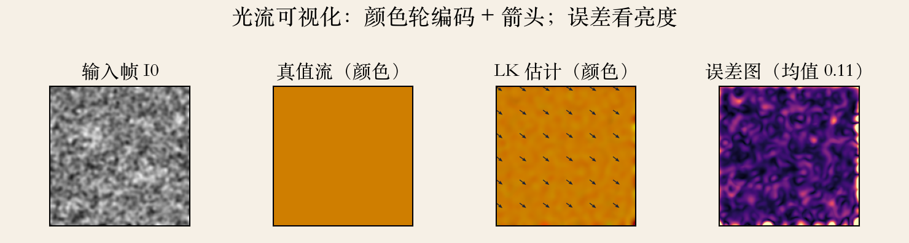
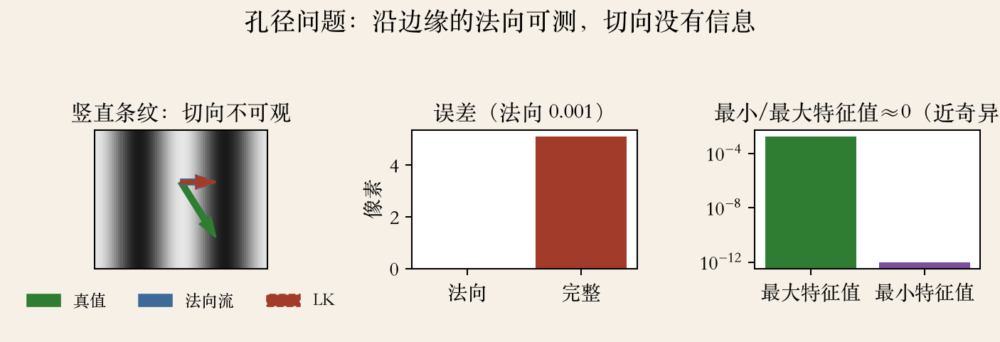
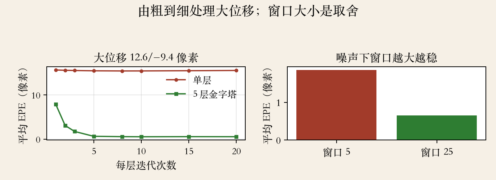

第 9 章上机 · 实验课
从公式到能跑的程序
这一集把光流做成手写程序。
先学看：颜色、箭头、误差图。
再写局部 Lucas–Kanade 求解器。
最后试三类难例：孔径、大位移、平坦区。
依据：本集实验；算法回指原书第 579–583 页
本集三件事
看光流：颜色/箭头/误差
写 LK：窗口/梯度/迭代
试难例：孔径/大位移/平坦
正课第八十一集
01 / 16
第 9 章 §9.3 · 原书第 579 页
光流为什么欠约束
每个像素两个未知量，只有一个测量。
一个方程两个未知数，信息本身不够。
路线一：局部重叠窗口汇总。
路线二：加平滑项做全局优化。
依据：原书第 579 页
两条路线
局部窗口：邻居一起投票
全局平滑：邻居别差太多
后来还会合流
正课第八十一集
02 / 16
第 9 章 §9.3 · 原书第 579 页
Patch LK：泰勒展开加金字塔
泰勒展开把位移后的图像线性化。
得到亚像素估计，就是 Lucas–Kanade。
Anandan 把离散搜索和 LK 细化放进金字塔。
由粗到细，能估大位移。
依据：原书第 579 页
两条要点
小位移：邻域梯度解 2×2
一次不够就 warp 再解
大位移：金字塔逐层细化
正课第八十一集
03 / 16
第 9 章 §9.3 · 原书第 580 页
窗口聚合与全局平滑
重叠窗口先算梯度外积和亮度误差。
再用移动平均滤波做窗口求和。
Horn–Schunck 加平滑约束，同时解所有流。
脚注：其他平滑或聚合滤波器也能用。
依据：原书第 580 页
两种聚合
窗口求和：邻居投票
平滑项：邻居之间别差太多
一个偏局部，一个偏全局
正课第八十一集
04 / 16
可视化 · 读图方法
先学会看光流
色相表示方向，亮度表示大小。
箭头看局部方向，适合关键点。
误差图要和真值比。
颜色图不是精确读数。
依据：本集实验；颜色轮读法为通用解释
三张图
颜色：方向与大小
箭头：局部方向
误差图：和真值比
正课第八十一集
05 / 16
上机 · 合成数据
实验设置：真值已知
合成有纹理的图，整体平移 2.3、1.7 像素。
大位移用 12.6、−9.4 像素。
另做条纹、平坦区、加噪纹理三组对照。
图像归一化到 0 到 1。
依据：本集实验
四组数据
小位移：看迭代收敛
大位移：看金字塔
条纹：看孔径
平坦/加噪：看信息与窗口
正课第八十一集
06 / 16
光流可视化 · 程序生成
看图：颜色、箭头、误差
四联图：输入帧、真值流、LK 估计、误差图。
真值一片橙，说明整幅同向。
LK 估计也基本一片橙。
平均误差 0.11 像素，亮点在边界和弱纹理。
依据：本集实验

合成平移：输入帧、真值流、LK 估计、误差图｜程序生成，未用教材或论文原图
正课第八十一集
07 / 16
上机 · 推导
手写 LK：2×2 法方程
邻域里求 Ix²、IxIy、Iy²、IxIt、IyIt。
解出 du、dv，再 warp 到新位置。
矩阵两个特征值都大，才敢信二维运动。
行列式太小，说明这个窗口不可信。
依据：标准 LK 推导；特征值回指原书第 579 页
Sxx·du + Sxy·dv = −Sxt
Sxy·du + Syy·dv = −Syt
S：窗口内梯度的加权和；解出 du、dv 后 warp，再迭代
正课第八十一集
08 / 16
上机 · 小位移
一次不够：迭代到亚像素
一次线性化误差 1.87 像素。
迭代五次降到 0.11 像素。
迭代是每次 warp 后解一个小增量。
增量来回摆，说明步长或窗口不合适。
依据：本集实验；迭代细化回指原书第 579、583 页
小位移读数
一次线性化：1.87px
五次迭代：0.11px
已经亚像素
正课第八十一集
09 / 16
第 9 章 §9.3 · 原书第 579 页
孔径：法向可测，切向不可观
竖直条纹只有水平梯度，矩阵秩一。
沿条纹方向走多远都看不出变化。
法向流可测，切向流不可观。
角点比边缘更适合跟踪。
依据：原书第 579 页
为什么退化
只有一个方向的梯度
Hessian 最小特征值近零
秩一矩阵定不住二维
正课第八十一集
10 / 16
上机 · 孔径
实测：法向准，完整错
条纹真实运动 3.2、5.1 像素。
法向分量误差不到 0.001 像素。
完整流误差 5.10 像素。
最小特征值比最大特征值接近零。
依据：本集实验
读数与原因
真值：3.2 / 5.1px
法向误差：<0.001px
完整误差：5.10px
λmin / λmax ≈ 0
正课第八十一集
11 / 16
孔径实验 · 程序生成
看图：三个箭头
绿色真值，蓝色法向流，橙色虚线是 LK。
LK 只把法向分量估对了。
切向分量停在零。
右图对数坐标，最小特征值接近零。
依据：本集实验

竖直条纹：真值、法向流、LK 箭头与误差、Hessian 特征值｜程序生成，未用教材或论文原图
正课第八十一集
12 / 16
上机 · coarse-to-fine
大位移：金字塔救场
单层 LK 误差 15.5 像素，基本没动。
五层金字塔、每层 20 次迭代，降到 0.54 像素。
粗层先估大概，逐层上采样再细化。
层数按最大位移选，最粗层剩一两像素。
依据：本集实验；coarse-to-fine 回指原书第 579、583 页
读数与做法
单层：15.5px
五层 / 每层 20 次：0.54px
每层只修一点点
正课第八十一集
13 / 16
金字塔/窗口 · 程序生成
看图：红线下不去，绿线下去
红线是单层，迭代再多也停在 15 像素左右。
绿线是五层金字塔，几次迭代就掉到 1 像素以下。
二十次到 0.54 像素。
窗口 5 误差 1.85，窗口 25 降到 0.65。
依据：本集实验

大位移：单层与 5 层金字塔收敛曲线；窗口 5/25 误差｜程序生成，未用教材或论文原图
正课第八十一集
14 / 16
失败模式 · 条件数
两个失败模式：平坦与弱纹理
平坦区没有梯度，LK 误差 6.02 像素。
6.02 正好是位移的模长，说明根本没动。
平坦区两个特征值都太小。
孔径是一个特征值太小，法向还能测。
依据：本集实验
条件数与自检
平坦：两个特征值都小
孔径：一个小，法向可测
工程上加正则、做前后向自检
按特征值给置信度
正课第八十一集
15 / 16
收束 · 下一集复盘
实验课收束
颜色轮看方向，箭头看局部，误差图看真值差。
LK 用邻域梯度解 2×2 方程。
迭代和金字塔缺一不可。
先看矩阵特征值，再决定信不信。
依据：本集实验；下一集为第 8–9 章复盘
下一集
第 8–9 章复盘
对齐、拼接、运动估计串起来
下一集见
正课第八十一集
16 / 16